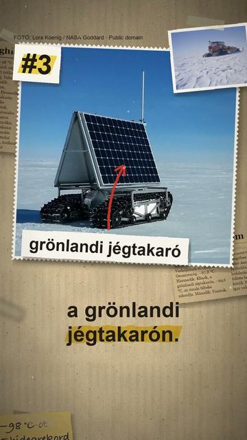
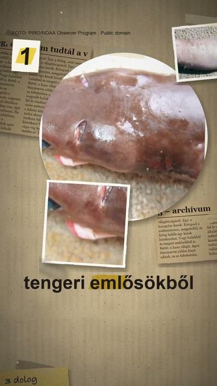
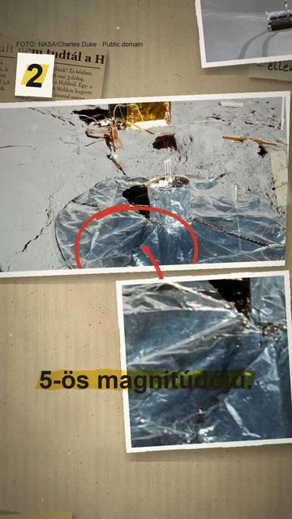
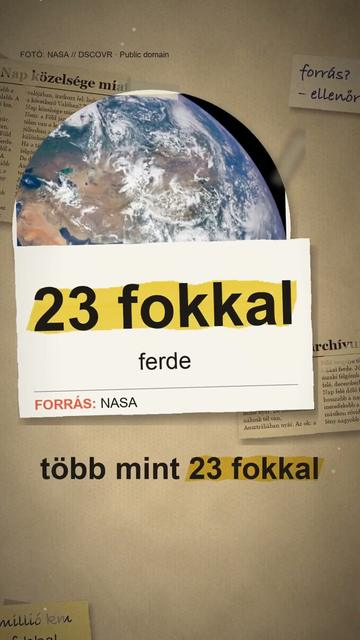

Világ és űr
A legnagyobb és a legkisebb országok, a Naprendszer holdjai és a Kínai Nagy Fal: érdekességek és rangsorok a világról.
Ellenőrzött állítások
Minden videó
 A Naprendszer 5 legmagasabb hegye
A Naprendszer 5 legmagasabb hegye
Hol a leghidegebb a Földön? 5 hidegrekord
3 dolog, amit nem tudtál a világítócápáról
3 dolog, amit nem tudtál a Holdról 5 pokoli bolygó: meddig bírnád?
5 pokoli bolygó: meddig bírnád?
Tényleg a Nap közelsége miatt van nyár? Az 5 legforróbb hely a Földön
Az 5 legforróbb hely a Földön Az 5 leggazdagabb ország a világon
Az 5 leggazdagabb ország a világon Az 5 legdrágább valuta a világon
Az 5 legdrágább valuta a világon A világ legcsípősebb paprikája: 5 mért rekord
A világ legcsípősebb paprikája: 5 mért rekord A világ 5 leghosszabb folyója
A világ 5 leghosszabb folyója 3 dolog, amit nem tudtál a Tokaido-sinkanszenről
3 dolog, amit nem tudtál a Tokaido-sinkanszenről Az 5 legnagyobb ország a világon
Az 5 legnagyobb ország a világon Az 5 legkisebb ország a világon
Az 5 legkisebb ország a világon A Naprendszer 5 legnagyobb holdja
A Naprendszer 5 legnagyobb holdja TévhitLátszik a Kínai Nagy Fal az űrből?
TévhitLátszik a Kínai Nagy Fal az űrből?